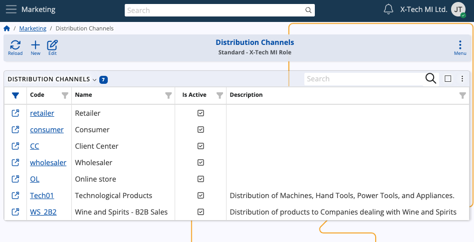
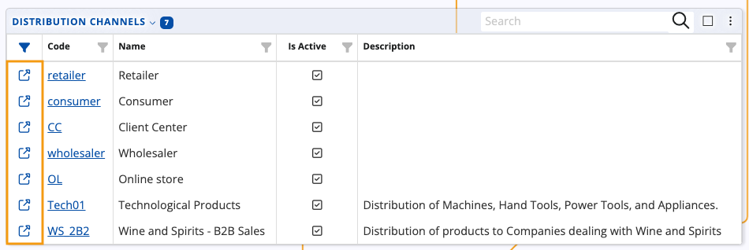
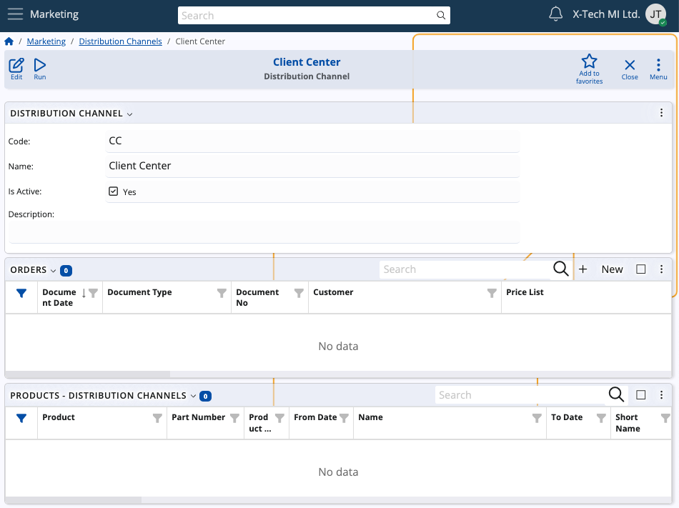
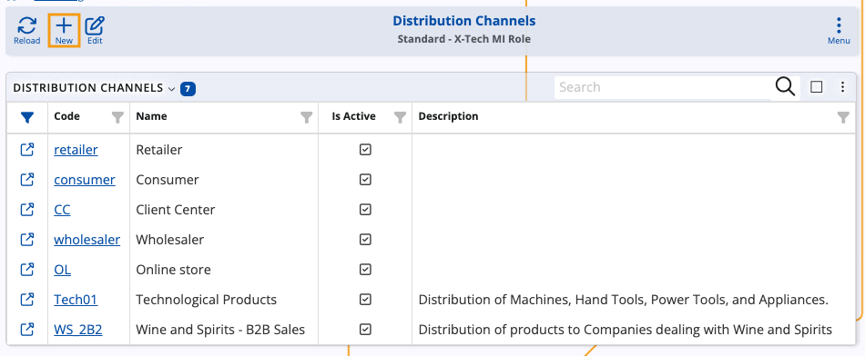
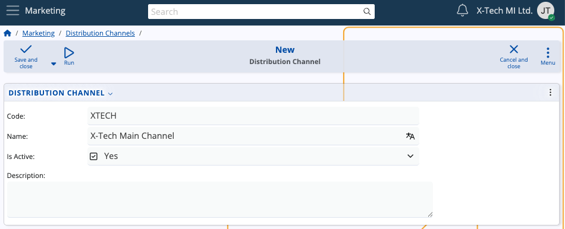
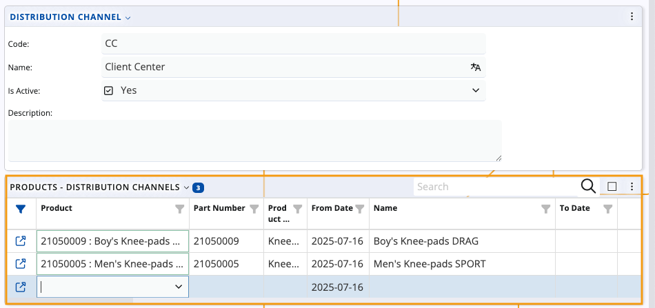

Distribution channels
A distribution channel can be defined as a distinct pathway through which goods or services are delivered. In ERP.net, it represents a configurable entity through which a company (or customer) offers and sells its products or services.

Details
The Distribution Channels table provides a structured overview of all defined distribution channels within your organization. For every channel record, you can see its unique Code and descriptive Name that indicates its business purpose (e.g. Retailer, Client Center). The Is Active column shows whether the channel is currently enabled for operational use.
If you click on the name of a channel or the blue arrow button on the left of its row, you can expand it to see more details.

This includes any orders and products tied to it.

Create a new distribution channel
You can easily create a new channel on-demand.
- To begin, click the New button.

Enter a short, unique Code identifier for the channel (e.g., OL, CC).
Fill in the Name field with a user-friendly label for the channel.
Use the Is Active checkbox to indicate whether the distribution channel should be immediately available for use.
Add an optional Description to provide additional context.

Link products
Once you fill in the main details, you can associate specific products with the new channel.
This step ensures that products are available for sale through that channel, optionally marked with a From Date and To Date indicating when the product is listed and de-listed.

Tip
The ERP.net Client Center makes use of distribution channels. In the website definition, there is a Default Distribution Channel with code "CC" and name "Client Center", ensuring that products have a pathway through which they can be delivered.
If products are associated with this channel, they can be added directly into a sales order while it is being created in the Client Center.
ERP.net customers also work with distribution channels. A customer entity can have a preferred Default Distribution Channel they can use for listing products.
If products are associated with this channel, they can be added directly into a sales order in the Client Center.